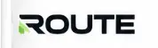

PRODUCT DESIGN / VISUAL SYSTEMS
Selected work
Digital experiences shaped by research, clear structure, and visual craft.
01 / Product design

Product design · Job search · Concept
SIGNAL
A clearer path from tracking applications to taking the next step.

Product design · AI interviewing
Making AI interview workflows easier to navigate
Designing recruiter onboarding and candidate interview preparation.

Product design · Healthcare
ALS Clinical Decision Tool
A guided resource app connecting people with ALS and clinicians to practical information.

Product design · Insurance · In progress
Cover Compass
A guided tool for comparing auto insurance quotes and understanding coverage differences.
02 / Working tools
Five additional early web apps. Previews are illustrative mockups with example data.

Web app · Work & earnings
SHIFT
Make sense of every shift.

Web app · Travel & cost

Find a route that fits.

Web app · Insurance
COVER
Compare the details that matter.

Web app · Skills & projects
STACK
Turn progress into practice.

Web app · Location research
FIELD
Collect what you notice.
03 / Visual systems & editorial

Editorial · AI-assisted visual concept
Chaos & Order
Exploring generative systems through a thesis book concept.

Editorial · Typography
On Growth and Form
Using typography and composition to shape a reading experience.

Commercial · Digital & editorial
Cervera Real Estate
Bringing a real estate brand across digital and print communications.